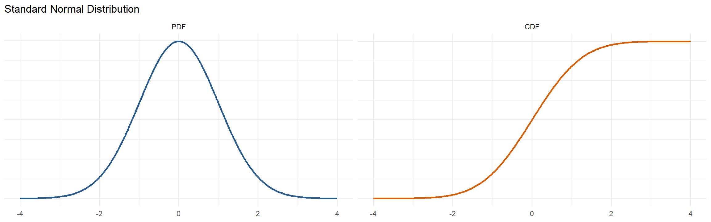
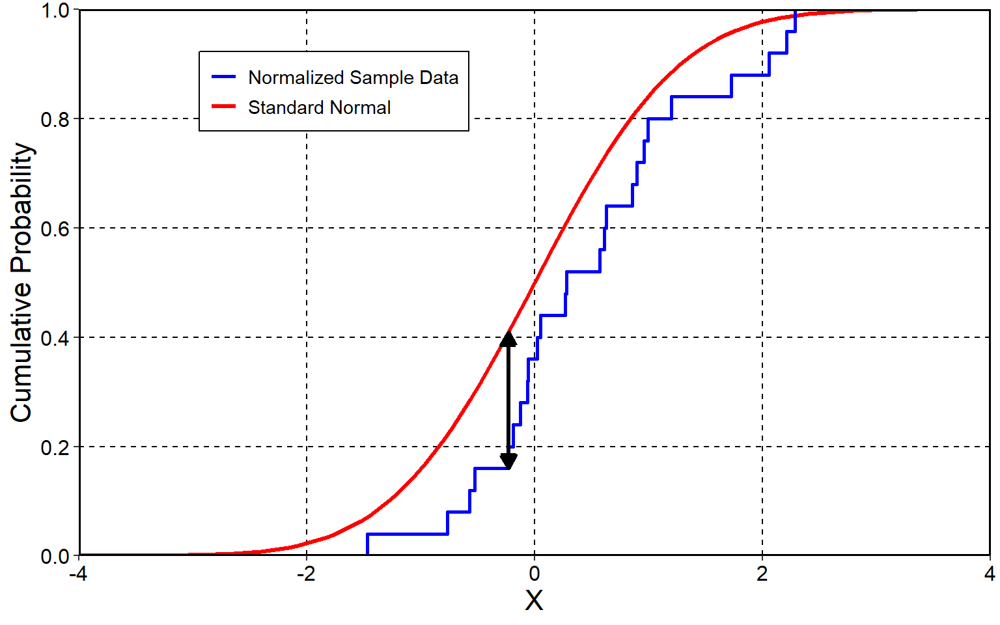
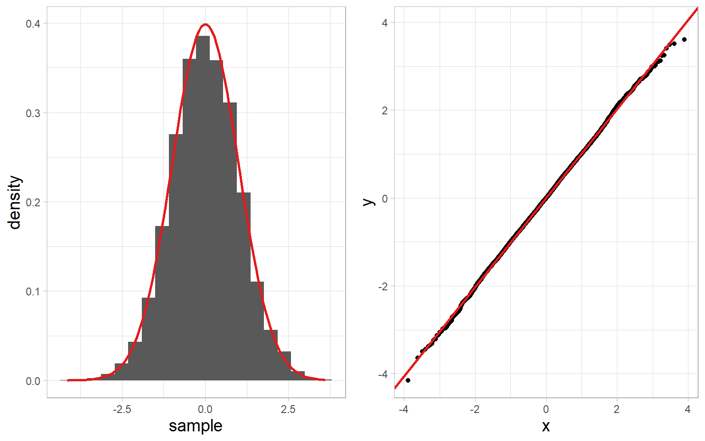
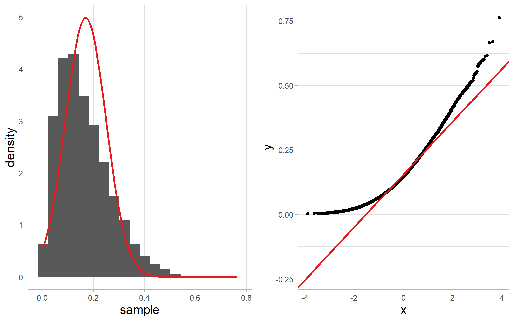

Exam format
You may want to at least load the datasets for the applied section before doing anything else just to make sure you don’t run into any bugs
As I was reviewing for Exam 1, one question came up for me that I would like to review next Tuesday. How should we decide whether a risk ratio or odds ratio is the more useful effect size for a study, and what differences in interpretation should we consider?
THIS EXAMPLE IS MADE UP
The following table shows the relationship between people wearing seatbelts and types of injuries sustained in car crashes
| No Injury | Injury | Fatality | Total | |
|---|---|---|---|---|
| Seat Belt | 50 | 10 | 5 | 65 |
| No Seat Belt | 10 | 40 | 20 | 70 |
| Total | 60 | 50 | 25 | 135 |
What is the risk of injury for people who wore a seatbelt?
\(\text{risk of injury} = \frac{\text{Injury \& Seat Belt}}{\text{Seat Belt}} = \frac{10}{65} = 0.15\)
| No Injury | Injury | Fatality | Total | |
|---|---|---|---|---|
| Seat Belt | 50 | 10 | 5 | 65 |
| No Seat Belt | 10 | 40 | 20 | 70 |
| Total | 60 | 50 | 25 | 135 |
What is the odds of injury for people who wore a seatbelt?
Not necessarily as clearly defined. What is the comparison? Odds always compare one group to another. As asked this might mean the odds of injury vs all other outcomes
\(\text{odds(injury vs all other outcomes)} = \frac{\text{Injury \& Seat Belt}}{\text{Seat Belt - (Injury \& Seat Belt)}} = \frac{10}{65-10} = 0.18\)
Could also be injury vs no injury for seatbelt
\(\text{odds(injury vs no injury)} = \frac{\text{Injury \& Seat Belt}}{\text{No Injury \& Seat Belt}} = \frac{10}{50} = 0.2\)
Note that we can move between risk and odds as long as all outcomes are included in odds
Using only the risk of injury (\(0.15\)), what is the odds of injury vs all other outcomes?
\(\text{risk of injury} = \frac{\text{Injury \& Seat Belt}}{\text{Seat Belt}} = \frac{10}{65} = 0.15\)
\(\text{odds(injury vs all other outcomes)} = \frac{\text{Risk}}{1 - \text{risk}} = \frac{0.15}{1 - 0.15} = 0.18\)
Using only the odds of injury (\(0.18\)), what is the risk of injury vs all other outcomes?
\(\text{risk of injury} = \frac{\text{Odds}}{1 + \text{Odds}} = \frac{0.18}{1 + 0.18} = 0.15\)
Risk ratio always compares one marginal comparison (i.e. injury for seat belt) to the same outcome for a different margin (i.e. injury for no seat belt)
| No Injury | Injury | Fatality | Total | |
|---|---|---|---|---|
| Seat Belt | 50 | 10 | 5 | 65 |
| No Seat Belt | 10 | 40 | 20 | 70 |
| Total | 60 | 50 | 25 | 135 |
What is the risk ratio of injury for seatbelt vs no seatbelt?
\(\text{risk ratio injury for seatbelt} = \frac{\text{risk(Injury|seatbelt)}}{\text{risk(injury|no seatbelt)}} = \frac{10/65}{40/70} = 0.27\)
For odds ratio, we again have to decide the comparison class.
What is the odds of injury vs everything else for seat belt vs no seat belt?
\(\text{odds ratio injury vs everything else for seatbelt} = \frac{\text{odds(Injury vs everything else|seatbelt)}}{\text{odds(injury vs everything else|no seatbelt)}} = \frac{10/(65 - 10)}{40/(70 - 40)} = 0.14\)
What is the odds of injury vs no injury for seat belt vs no seat belt?
\(\text{odds ratio injury vs no injury for seatbelt} = \frac{\text{odds(Injury vs no injury|seatbelt)}}{\text{odds(injury vs no injury|no seatbelt)}} = \frac{10/50}{40/10} = 0.05\)
As I was reviewing for Exam 1, one question came up for me that I would like to review next Tuesday. How should we decide whether a risk ratio or odds ratio is the more useful effect size for a study, and what differences in interpretation should we consider?
Thoughts?
Is it possible to do a crash course on the different power analyses and the red flags that were mentioned in class?
What are the four possible inputs for a power analysis?
Any power analysis plugs in three of these to determine the fourth. The type of power analysis depends on which one is being determined (based on the other three)
| Type of Power Analysis | Input | Output |
|---|---|---|
| a priori | \(\alpha\) Statistical Power Effect Size |
Sample Size |
| Retrospective | \(\alpha\) Sample Size Effect Size |
Statistical Power |
| Sensitivity | \(\alpha\) Statistical Power Sample Size |
Effect Size |
| Criterion | Statistical Power Effect Size Sample Size |
\(\alpha\) |
Inputs:
Held out: Sample Size (\(N\))
a priori power analysis is a way of figuring out what sample size you need to find an effect as small as the \(d\) used in the power analysis that satisfies your \(\alpha\) (typically .05) and your desired power
Inputs:
Held out: Power (\(1 - \beta\))
retrospective power analysis is a way of figuring how much statistical power you have to detect an effect as small as the \(d\) value used in the power analysis based on your sample size (from a study you already did) and \(\alpha\) (usually .05). Don’t use your observed \(d\) from the study! Use the smallest \(d\) value you care about (or try different \(d\) values to see how power changes)
Inputs:
Held out: Effect size (often \(d\), others later)
Sensitivity power analysis is a way of figuring how what the smallest possible effect size you could detect is based on your sample size \(N\), desired level of power, and \(\alpha\) (.05). You will often try different values of powre (e.g. 80%, 85%, 90%, 95%) so you can figure out the effect size detectable at different levels of statistical power
Inputs:
Held out: Type I Error rate (\(\alpha\))
Criterion power analysis is a way of figuring out how your Type I Error rate would vary if you fix power, sample size \(N\), and effect size. This is not very common, but we’ve discussed it conceptually. It essentially makes the Type II error rate (\(\beta\)), which is all about incorrectly retaining the null, the star of the show, rather than \(\alpha\), the Type I error rate, which is all about incorrectly rejecting the null
Each of these four types of power analysis
Is it possible to go through the purpose of the Inverse Function again (Monte Carlo Simulation Lecture, Slide 10)? Specifically, what the code is doing and how it builds off of slide 9?
When we have a categorical variable, we often need to map it to numbers to make use of it
Example:
The function \(X()\) is how we map the labels \(\text{heads}\) and \(\text{tails}\) to numeric values
The inverse function \(X^{-1}()\) just maps the numeric values back to the categorical labels.
rbinom(), to get a series of random numbers, and then convert them into categories if we wish.RIf I want to simulate coin flips, I need a way to define each of the outcomes as numbers. The function \(X()\) allows me to do that conceptually: \(X(\text{coin flip}) = \text{heads} = 1; \text{tails} = 0\)
But if I want to sample random coin flip outcomes, because rbinom() can only give us numbers, I have to start by sampling numbers
Then I can map those numbers back to the categorical labels with the inverse function \(X^{-1}(X) = 1 = \text{heads}; 0 = \text{tails}\)
Can you re-explain the Pythathogrean Theorm of Statistics and why we can’t use absolute values for variance instead of squares? Thank you!
This will not be on the exam! I was mostly including it to give you an idea about why variance is so important
I will briefly show an example to help though
\(s^2_x + s^2_y - 2\text{cov}_{xy} = s^2_{x + y}\)
Let’s simulate two independent variables \(x\) and \(y\) with very large sample sizes.
I will then calculate \(\sigma_{x + y}\), \(\sqrt{\sigma_x^2 + \sigma_y^2}\), and \(\bigg(\frac{\sum|x - \bar{x}|}{N - 1} + \frac{\sum|y - \bar{y}|}{N - 1}\bigg)\) (sum of mean absolute errors, instead of variance, which is sum of squared errors)
First, let’s check if they are independent. Is their covariance (correlation) 0 (or close to it)?
Small amount of correlation because this is a finite sample (not full population)
Now let’s calculate \(\sigma_{x + y}\), \(\sqrt{\sigma_x^2 + \sigma_y^2}\), and \(\bigg(\frac{\sum|x - \bar{x}|}{N - 1} + \frac{\sum|y - \bar{y}|}{N - 1}\bigg)\)
\(\sigma_{x + y}\) and \(\sqrt{\sigma_x^2 + \sigma_y^2}\) are almost identical (the small amount of correlation is what perturbs it)
\(\bigg(\frac{\sum|x - \bar{x}|}{N - 1} + \frac{\sum|y - \bar{y}|}{N - 1}\bigg)\) is much more different
How exactly do Kolmogorov-Smirnov and Shapiro-Wilk tests work? I understand they’re testing if the sample distribution differs from a normal distribution and they’re sensitive to N, but how are they testing it?
Also, how do they differ?
This will not also not be on the exam! You should know these tests exist and a bit about what they do, you do not need to know the mathematical details of how they work, and I generally discourage their use for testing normality
The KS-test is a very flexible test for testing whether two distributions (of any kind) are identical.


KS Test: In repeated samples, would the average length of the black arrow be different than 0?
The Shapiro test does something similar, but more complicated and specifically tailored to the normal distribution (KS test can compare any two distributions)
(this is a very very rough/intuitive explanation)

Small \(W\) because points don’t deviate far from reference line

Large \(W\) because points deviate a lot from reference line
One thing you didn’t have a chance to go over yet in lab was how to get \(d\) in R. I did show you in lecture and this may come up on your exam.
This was from the McCrea data
I find sometimes this function misbehaves and you have to directly reference the data with each variable in the formula as dat$percent ~ dat$Cond (I’m not sure why, but if it doesn’t work, try this)